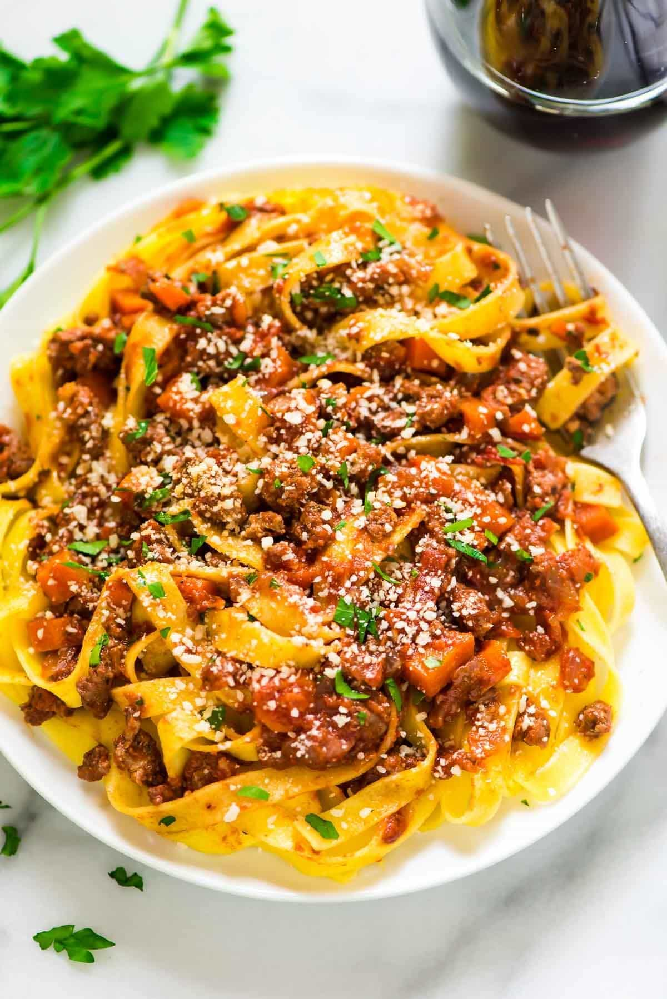

turkey-bolognese
Turkey Bolognese

Intro
In this recipe we will go over how to make a classic Italian dish the "Bolognese" substituting ground turkey instead of a more traditional ground beef or pork product. By using ground turkey we are able to both lower the fat content of the dish and have a meal that is kosher for all major religions.
Ingredients
- 1 Tablespoon of extra version olive oil or grapeseed oil.
- 2 Medium carrots small diced (about 1/3 cup)
- half a small Spanish Onion (about 2/3 cup)
- 3 Cloves of Garlic
- 1/8 cup of Sherry Wine
- 2 lbs Ground Turkey
- 1 Tablespoon of dried Oregano / or 2 sprigs of fresh Oregano
- 1 Tablespoon of dried Basil / or 5-7 leaves of fresh Basil
- 1/2 Tablespoon of Red pepper flakes
- Half a can of Ragu marinara sauce
- 1/8 cup of Heavy cream or half and half to finish
- Salt and pepper to taste
- 2 1/2 cups of dried Fettucini pasta / or any pasta of your choice.
- 1/4 cup of grated Parmesean cheese / or 1/4 cup of grated Pecorino Romano cheese
Directions
- First set a pot of 1/2 gallon of water on to boil with enough salt that the water tastes like seawater
- While the water is heating up in a separate pan saute your ground turkey, seasoning with salt and pepper until brown
- Once browned add in your sherry and onions, scraping the fond from the pan and reducing the alcohol to sec
- Add in your carrots and garlic saute until soft and aromatic
- Add your sauce, red pepper flakes & herbs. Reduce heat to a simmer and cook down. Taste and adjust seasoning as needed
- Once water is boiling add your pasta and stir cooking until al dente
- Remove pasta once cooked and add to your pan with the simmering meat sauce, reserving some of the pasta water.
- Finish with cream, pasta water and cheese adding small amounts at a time and adjusting for taste and consistency.